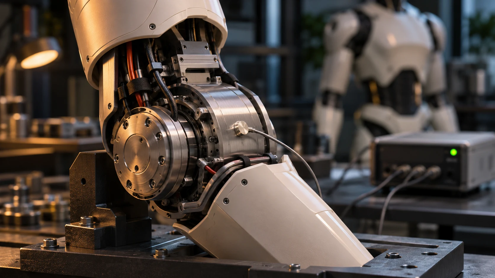

Evaluate the complete duty profile and the meaning of each temperature signal. A successful first motion does not establish sustained capability, and a housing measurement does not automatically describe the winding.
A humanoid completes a convincing demonstration, then begins pausing during a longer session. The actuator may still be mechanically capable of the requested motion, while the installed system behaves differently as it warms. This is a question about the task over time, not simply the largest torque number on a product page. A useful thermal review connects the operating sequence, installation and available measurements to the exact manufacturer's instructions. This guide proposes an evidence workflow for an integration team. It does not establish a safe temperature, approve a cooling modification or report an independent hardware test.
Describe the whole duty profile
Write down the sequence that the robot is expected to repeat. Include movement, holding, waiting and any return to a starting pose. Record the object, tool, configuration and relevant software revision. A task description such as 'lift the part' can hide a long hold while another machine finishes. That hold belongs in the comparison even if the robot looks stationary.
Choose a representative operating period with the responsible integrator, using supported commissioning conditions. Identify which steps are allowed to change and which remain fixed. Record the actual sequence rather than assuming that every repetition follows the same timing. A delayed upstream process can change the profile without changing the programmed movement. The result should be understandable to an engineer who did not attend the demonstration.
Connect supplier data to the installed system
Gather the documentation for the exact actuator, controller and mechanism revision. Identify the manufacturer's continuous-operation information, relevant installation assumptions, temperature signals and protective behavior. Keep motor-level ratings separate from claims about the complete joint. A robot cover, mounting arrangement or nearby heat source can make the installed configuration a different engineering question from a component shown by itself.
maxon's official continuous-operation explanation links the operating boundary to winding temperature and heat dissipation, with both current-related and speed-related losses. Its heating discussion also explains that controller behavior can affect motor heating. Those references are useful background for a supplier conversation, not a model-independent rating for a humanoid. Ask the supplier which assumptions apply to the selected assembly and which conditions still need to be assessed in the installation.
Identify what each temperature actually represents
Make a small measurement map before comparing results. For each available value, record its source, units, update behavior and documented location or meaning. An actuator's reported internal temperature, a probe on the housing and room temperature are different observations. Keep their names visible in the dataset so that a later chart cannot accidentally present one as another.
If an external probe is used, document its position and attachment method under the team's approved procedure. A thermal camera image can add context, but it does not automatically measure a winding or replace the manufacturer's protective signals. Avoid deriving an undocumented internal limit from the apparent color of an external surface. State what the measurement covers and what remains unknown. The investigation becomes more useful when its limitations travel with the data.

Compare runs with a recorded starting condition
Define the baseline and candidate before changing the task. Keep the hardware arrangement, environment and measurement method comparable, and record the initial reported temperatures. A run starting after a long idle period should not silently stand beside a run beginning immediately after another experiment. Explain differences that cannot be controlled instead of concealing them in a single average.
Preserve the time series together with task events, pauses and any fault or warning reported by the supported interface. Note whether the logging itself changes the workflow. A plot should let the reader connect a rise or interruption to the sequence being performed, without claiming that coincidence alone establishes a cause. Use one agreed configuration change at a time where practical. If several things change together, describe the comparison as one between complete configurations.
Keep protection and recovery tied to the exact product
Review the manufacturer's protective behavior before a physical comparison. For example, the ROBOTIS XH430-V210 documentation describes a reported temperature, a temperature limit and an overheating response that depends on the shutdown configuration. It warns against raising the limit above its default and gives product-specific recovery guidance. This illustrates why the protection settings and revision belong in the configuration record; it does not supply a general procedure for other joints.
Agree on stop and recovery conditions with the responsible team using the applicable instructions. Do not disable protection, increase a limit or repeatedly restart a faulted actuator to finish a comparison. Record an interruption as an outcome with the preceding conditions. Keep any required cooldown or inspection attached to that product's procedure rather than inventing a universal pause between runs. Changes to cooling or mounting require their own engineering review.
Turn the observation into a purchasing and maintenance question
Describe the conclusion at the level the evidence supports. Perhaps the candidate sequence produces a different reported temperature trend, or perhaps a missing sensor definition prevents a meaningful comparison. Both outcomes can guide the next supplier question. Avoid promoting a successful short run into a claim about an entire shift or a different payload. Keep unresolved assumptions explicit in the handoff.
Share the duty profile, installation photographs, relevant settings and representative logs with the supplier. Ask what additional information is needed to evaluate sustained operation in that configuration. Preserve the accepted baseline after an agreed change, and identify which future changes require another review. A new cover, tool or waiting period may matter even when the actuator part number stays the same. This turns thermal behavior into maintained application evidence rather than a surprise discovered after purchasing more robots.
Your next step.
- Record movement, holding, waiting and recovery in the duty profile.
- Identify the meaning and source of every temperature signal.
- Compare runs with documented initial and environmental conditions.
- Preserve warnings and interruptions without bypassing protection.
- Review conclusions and any installation changes with the supplier.
Sources & further reading
Primary sources and manufacturer documentation for the examples and further investigation. Recommendations in this article are HUMANOID’s editorial guidance.
maxon: continuous operation range of BLDC motors ↗maxon: motor heating and controller considerations ↗ROBOTIS: XH430-V210 model reference and temperature protection ↗Prepared and references reviewed: 13 November 2026. This original practical guide does not report an independent hardware test. Limits, protective behavior and recovery procedures must come from the exact product's manufacturer documentation.